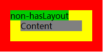
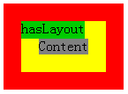

RX8018: IE6 IE7(Q) IE8(Q) 中包含块若未触发 hasLayout 则会造成参照其定位的绝对定位元素的偏移位置计算错误
标准参考
根据 W3C CSS2.1 规范，定位的元素（'position' 特性的值不为 'static'）可以通过 'top'、'right'、'bottom'、'left' 特性设定相对其包含块（containing block）的偏移位置。
绝对定位元素（position:absolute）的包含块由其最近的一个 'position' 不为 'static' 的祖先元素创建。当这个祖先元素不是行内级别时，包含块由其 padding edge 组成。
关于 'top'、'right'、'bottom'、'left' 特性及包含块计算的详细信息，请参考 CSS2.1 规范 9.3.2 Box offsets 及 10.1 Definition of "containing block" 中的内容。
问题描述
IE6 IE7(Q) IE8(Q) 中包含块若未触发 hasLayout1 则会造成参照其定位的绝对定位元素的偏移位置计算错误。
【注】：有关 IE hasLayout 特性详细说明，可以参看 MSDN 上的官方文档： http://msdn.microsoft.com/en-us/library/ms533776(VS.85).aspx
造成的影响
此问题会导致绝对定位元素的位置在各浏览器中产生差异，引起布局混乱。
受影响的浏览器
| IE6 IE7(Q) IE8(Q) |
|---|
问题分析
W3C 规范中说明了如果绝对定位元素的包含块是由非行内祖先元素生成的，则包含块由这个祖先元素的 "padding edge" 组成。 也就是说绝对定位元素应该参照其祖先元素 'padding' 和 'border' 之间的交接线所围成的矩形。
分析以下代码：
.all{
position:relative;
padding:20px;
border:20px solid red;
background:yellow;
}
.left{
background-color:green;
position:absolute;
height:20px;
top:0;
left:0;
}
.center{
background:gray;
}
<div style="width:200px;">
<div class="all">
<div class="center">Content</div>
<div class="left">non-hasLayout</div>
</div>
</div>
<br />
<div class="all" style="width:120px;">
<div class="center">Content</div>
<div class="left">hasLayout</div>
</div>
运行结果如下：
| IE6 IE7(Q) IE8(Q) | IE7(S) IE8(S) Firefox Chrome Safari Opera | |
|---|---|---|
| 未触发 IE 的 hasLayout 特性 |  |
 |
| 触发 IE 的 hasLayout 特性 |  |
【注1】：此处 IE 在混杂模式（Quriks Mode）中，会有盒模型计算问题，导致容器实际宽度比其他浏览器小，但是并不影响此问题说明。
以上代码中第一组 DIV 的外层 DIV 用来固定整体宽度， 其内 "class=left" 的 DIV 的宽度值为 'auto'，他的实际计算宽度将与外层 DIV 相同即 '200px'。由于没有设定宽度，他不会触发 IE 浏览器的 hasLayout 特性。
如设置宽度，那么该 DIV 便会触发 hasLayout，这会导致所有浏览器都处理相同。
而第二组 DIV 用来与第一组进行对比。
对照运行结果可知，红色部分为设置相对定位的 DIV 的边框，黄色部分为其 'padding' 的宽度，灰色部分为其内容区域（处于正常文档流中），绿色部分为设置绝对定位的 DIV（处于定位流中），红色与黄色的交接线所围成的矩形便是规范中描述的绝对定位元素应该参照的位置（padding edge）。
从截图中可以看到：
- 在 IE6 IE7(Q) IE8(Q) 中绝对定位元素并没有完全参照 'padding edge'，而是上部参照的 'border edge',左面参照的 'content edge'。
- 而在 其他浏览器 中包含块的计算则完全遵照 W3C 规范中的描述。
解决方案
使包含块触发 hasLayout 特性，如为其设置 'zoom:1' 或固定的宽度、高度。
参见
知识库
相关问题
测试环境
| 操作系统版本: | Windows 7 Ultimate build 7600 |
|---|---|
| 浏览器版本: |
IE6 IE7 IE8 Firefox 3.6.10 Chrome 7.0.517.8 dev Safari 5.0.2 Opera 10.62 |
| 测试页面: | absolute_align.html |
| 本文更新时间: | 2010-09-16 |
关键字
absolute offsetParent 包含块 绝对定位 对齐 containing block text-align